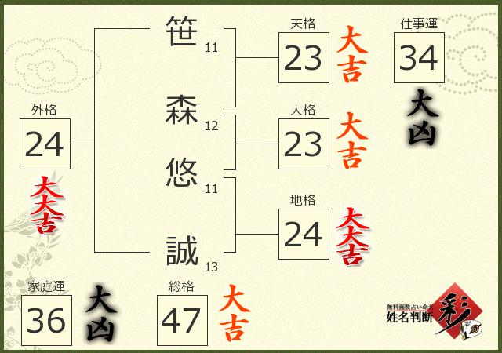
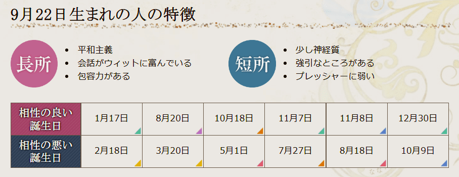
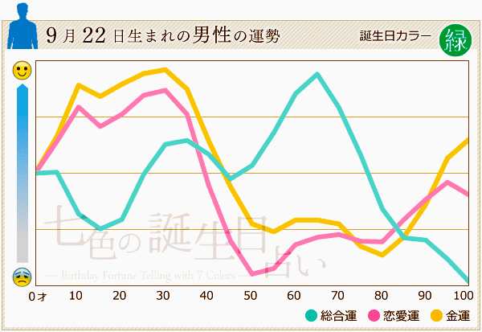

１.お名前
Sasamoriの名前 笹森 悠誠  名前占いしてみたら仕事運と家族運が大凶だ(´;ω;｀)みんなもよかったらやってみて！
２.生年月日
Sasamoriの生年月日
2003年9月22日
この日の星座はおとめ座で最終日だね！
有名人とか出来事は面白そうなのがなかったからまた占いにしてみました！


ん～...何とも言えない感じですねｗ
相性の悪い誕生日の人も仲良くしてね！
こっちもどうぞ！
相性の悪い誕生日の人も仲良くしてね！
こっちもどうぞ！
３.好きなこと・もの
ゲームはFPSを一番やってたと思う。
小学生の時からやってるよ！
マイクラとか平和なゲームも好きだからみんな誘ってね！
音楽は話が少し長くなるからここではザクっと！
高校時代は軽音楽部に所属していたこともあって、ギター・ベース・ドラムができるよ！
学園祭見に来てみてね！
Sasamoriの好きなスポーツはバスケ！中学でバスケ部に所属してたこともあってそれなりにできるよ！
半熟とか温泉卵とか硬くなってないトロトロなのが好きです！
ちなみに卵が大好物だって気づいたのはほんの数か月前のことで、家族の人とかはたまご好きだって気づいてたみたい(笑)
４.スキル
ここでは、Sasamoriのスキルレベルを紹介するよ！
スキルレベル
| 言語名 | できる度 |
|---|---|
| HTML5 | ★★★★☆ |
| CSS | ★★★☆☆ |
| SCSS | ★★☆☆☆ |
| C言語 | ★★☆☆☆ |
| アセンブラ言語 | ★★☆☆☆ |
| JAVA | ☆☆☆☆☆ |
| JavaScript | ☆☆☆☆☆ |
将来はフリーランスになりたいって考えてるからもっとスキルアップできるように頑張ります！